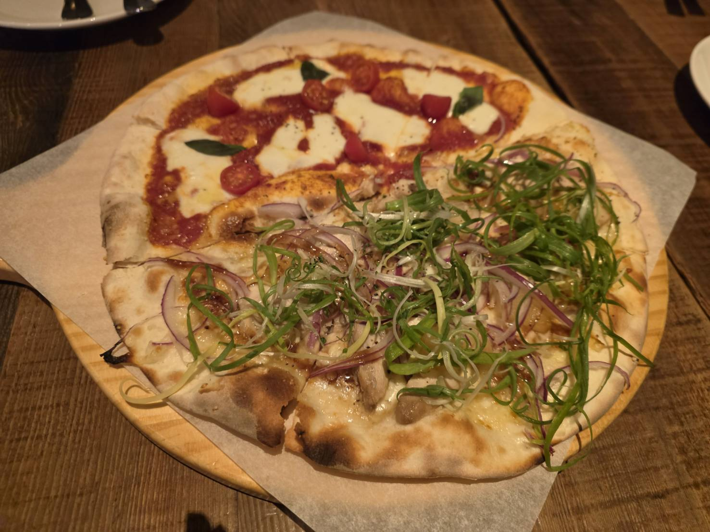
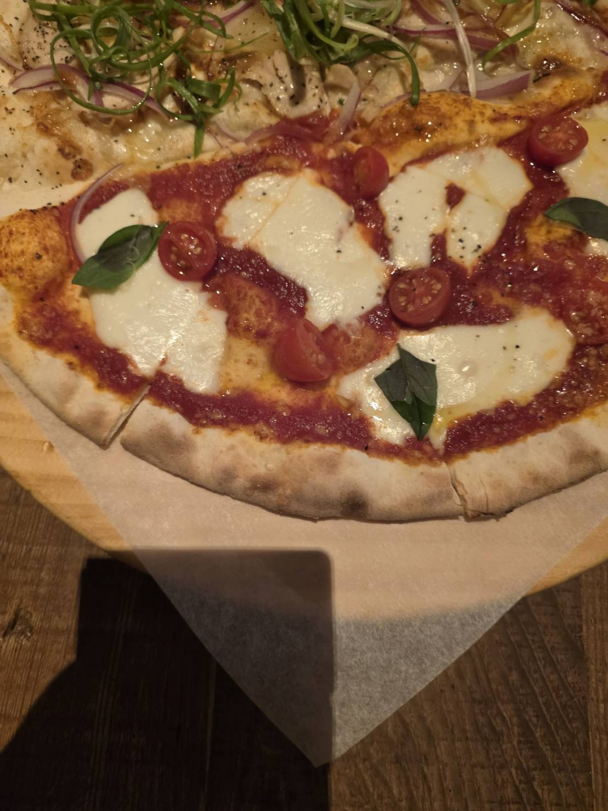
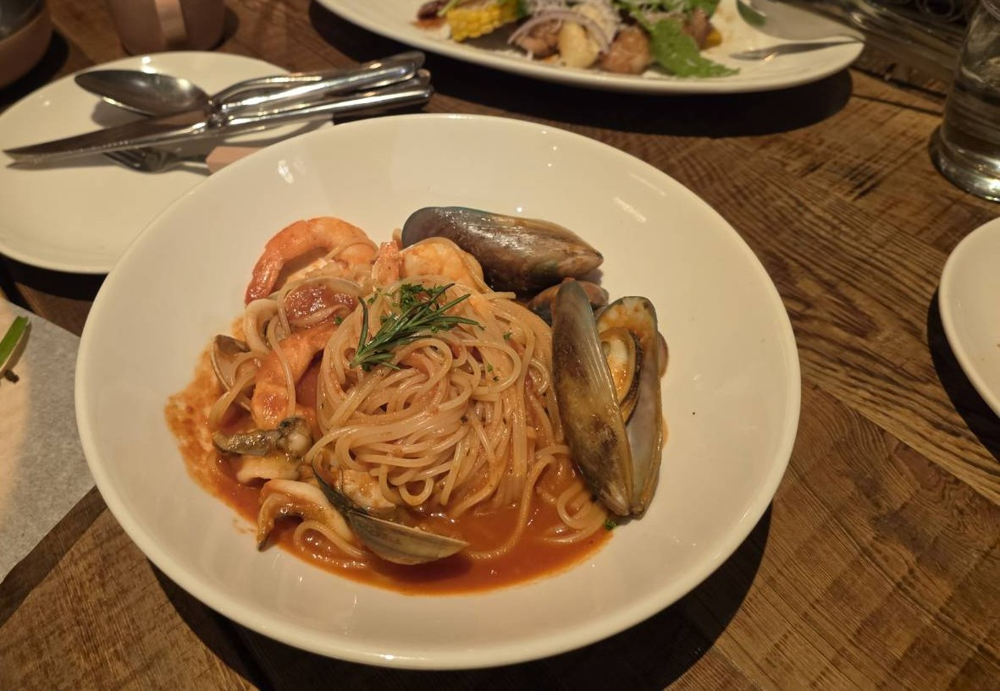
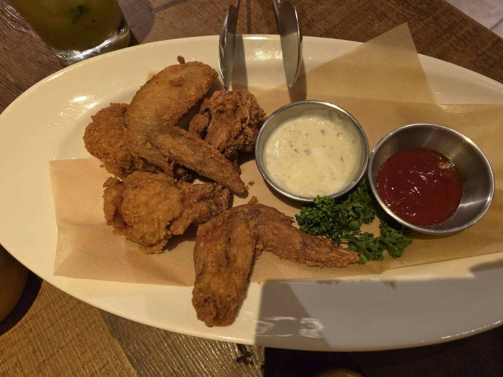
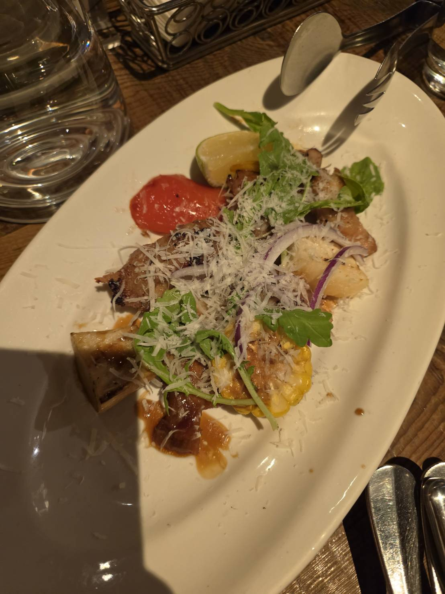
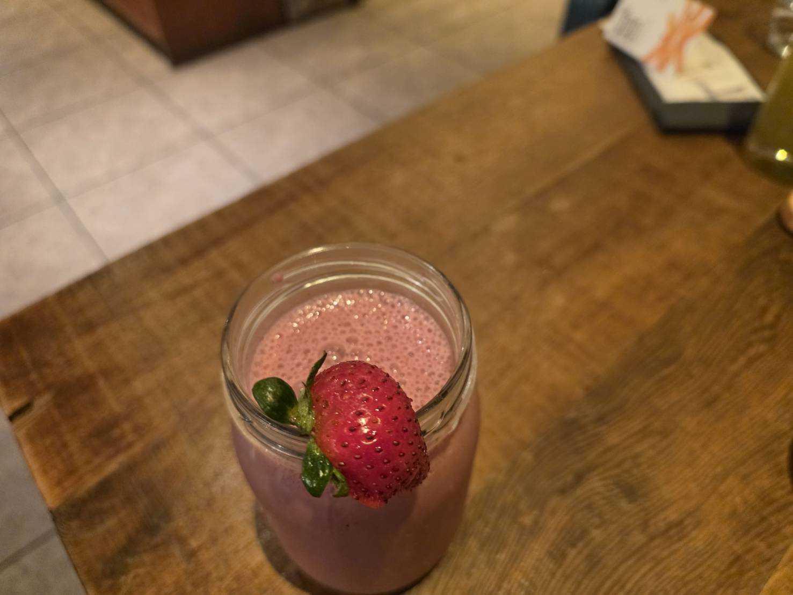
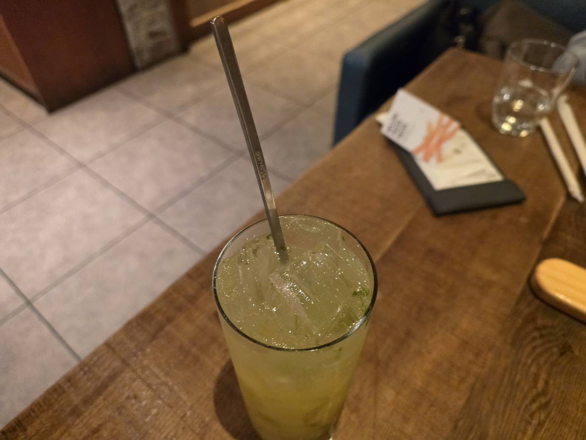
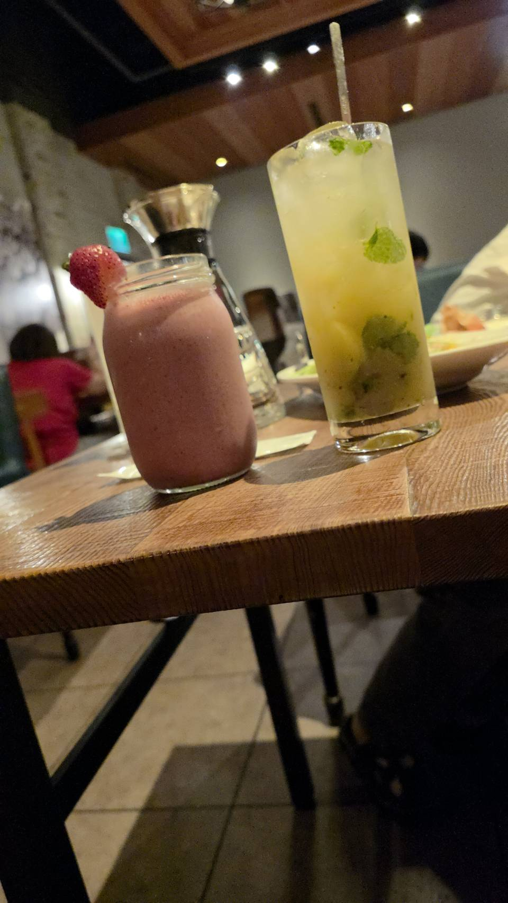
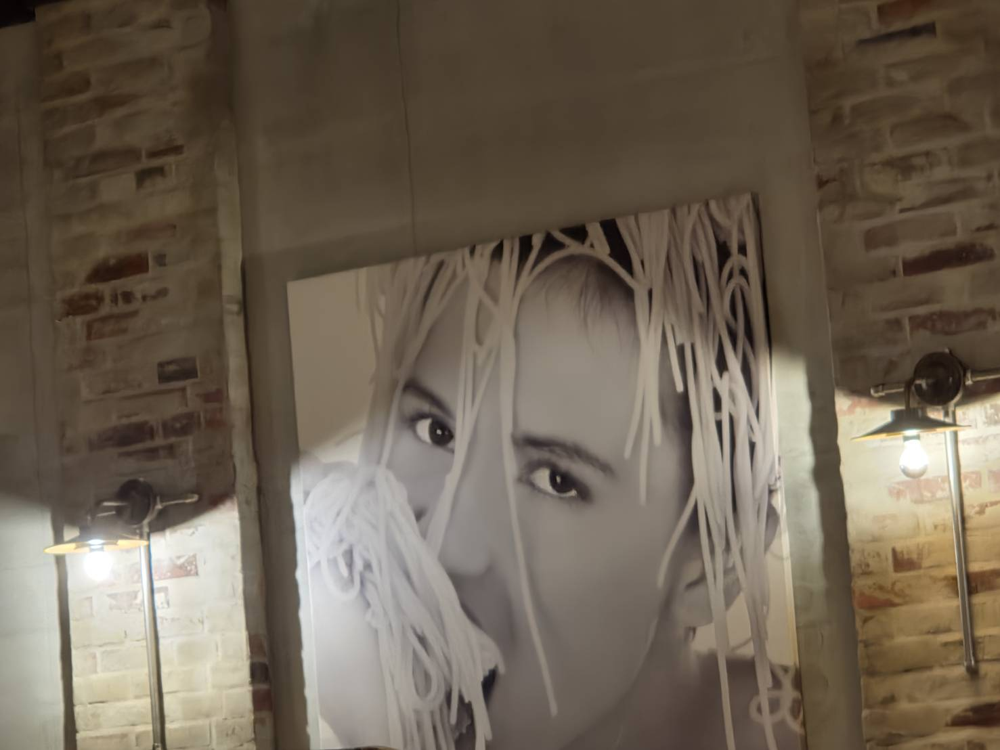

🍕 披薩
❤️❤️❤️❤️❤️
我覺得披薩很好吃，因為上面有 cheese！一半是紅紅的番茄披薩，一半上面有很多蔥。
Harvey 的美食日記 ｜ 2026 年 11 月 20 日（星期五）

我覺得披薩很好吃，因為上面有 cheese！一半是紅紅的番茄披薩，一半上面有很多蔥。

白白的就是 cheese，還有小番茄和綠色的葉子。

義大利麵很甜！裡面有淡菜，我很喜歡吃淡菜。黑黑長長的就是淡菜，還有蛤蜊和蝦子！
我超級喜歡吃蛤蜊！超級喜歡，一百喜歡！

很好吃的炸雞！旁邊有白色的醬和紅色的番茄醬可以沾。

上面撒了好多白白的 cheese 絲，還有玉米和綠色的菜。

粉紅色的草莓奶昔，杯子上面還放了一顆真的草莓！

我還要喝黃色汽水，結果我媽媽都嚇死了：「怎麼那麼酸呢！」

粉紅色的草莓奶昔和黃色汽水，放在一起拍照！

餐廳的牆上有一張好大的圖，裡面的人吃了好多麵，麵條還掛在頭上！